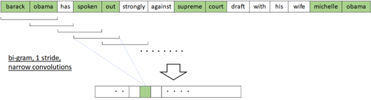
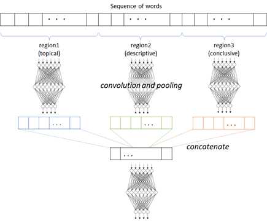
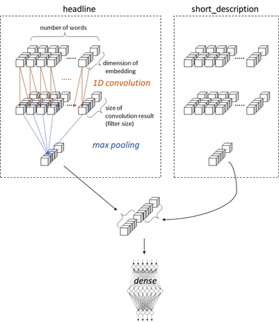

N-Gram detection with 1D Convolution#
Earlier we have run tasks on embeddings in each word, but we sometimes should handle a set of ordered items.
👉 For instance, “hot dog” won’t be in the species of “dog”, but it will be a part of food.
👉 “Paris Hilton” will also be far from “Paris” in language context.
👉 Even when you find “good” in the sentence, it might be a signal of negative sentiment in the context “not good”.
Not only bi-grams, but the same is true for tri-grams and generic N-grams.
The convolution network (CNN) is a today’s widely used model in computer vision (such as, image classification, object detection, segmentation, etc). In NLP, this convolutional architecture can also be applied in N-gram detection.
In computer vision, 2D convolution (convolution by 2 dimensions of width and height) is generally used, but in N-gram detection, 1D convolution is applied as follows.

There exist several variations for N-gram detection in NLP by convolutions.
The hierarchical convolutions can capture patterns with gaps, such as, “not — good” or “see — little” where “—” stands for a short sequence of words.
Similar to image processing, multiple channels can also be applied in NLP convolution. For instance, when each word has multiple embeddings (such as, word embedding, POS-tag embedding, position-wise word embedding, etc), these embeddings can be manipulated as multiple channels in NLP.
Or, after applying multiple N-grams (such as, 2-gram, 4-gram, and 6-gram), the results can also be manipulated as multiple channels.
Install required packages#
!pip install torch==2.3.0 torchtext==0.18.0 --no-cache-dir --extra-index-url https://download.pytorch.org/whl/cu113
import torch
print('PyTorch version:', torch.__version__)
import torchtext
print('torchtext version:', torchtext.__version__)
PyTorch version: 2.3.0
torchtext version: 0.18.0
!pip install pandas numpy nltk
import nltk
nltk.download("popular")
Prepare data#
We will use text in news papers dataset. (In this example, we use 2 columns of “headline” and “short description”.)
Before starting, please download News_Category_Dataset_v3.json (collected by HuffPost) in Kaggle.
import pandas as pd
data = pd.read_json("News_Category_Dataset_v3.json",lines=True)
In this example, we’ll apply text classification task.
The words appearing in the former part in sequence will be more indicative (topical) rather than the latter part.
For this reason, in practical text classification, a long text will then be separated into regions. In each region, the convolution (with pooling) is then applied and concatenated. (See below.)
For instance, with RCV1 (Reuters Corpus Volume I) dataset, 20 equally sized regions has better performance in category classification. (See Johnson and Zhang (2015).)

In this example, headline and short_description are both short text, and we then treat these features as regions, instead of separating a single text into regions.
text_data = data[["headline", "short_description"]]
label_data = data["category"]
text_data
| headline | short_description | |
|---|---|---|
| 0 | Over 4 Million Americans Roll Up Sleeves For O... | Health experts said it is too early to predict... |
| 1 | American Airlines Flyer Charged, Banned For Li... | He was subdued by passengers and crew when he ... |
| 2 | 23 Of The Funniest Tweets About Cats And Dogs ... | "Until you have a dog you don't understand wha... |
| 3 | The Funniest Tweets From Parents This Week (Se... | "Accidentally put grown-up toothpaste on my to... |
| 4 | Woman Who Called Cops On Black Bird-Watcher Lo... | Amy Cooper accused investment firm Franklin Te... |
| ... | ... | ... |
| 209522 | RIM CEO Thorsten Heins' 'Significant' Plans Fo... | Verizon Wireless and AT&T are already promotin... |
| 209523 | Maria Sharapova Stunned By Victoria Azarenka I... | Afterward, Azarenka, more effusive with the pr... |
| 209524 | Giants Over Patriots, Jets Over Colts Among M... | Leading up to Super Bowl XLVI, the most talked... |
| 209525 | Aldon Smith Arrested: 49ers Linebacker Busted ... | CORRECTION: An earlier version of this story i... |
| 209526 | Dwight Howard Rips Teammates After Magic Loss ... | The five-time all-star center tore into his te... |
209527 rows × 2 columns
To get the better performance (accuracy), we standarize the input text as follows.
Make all words to lowercase in order to reduce words
Make “-” (hyphen) to space
Remove stop words
Remove all punctuation
Here I have removed stop words, but we need to take care if we train model for other tasks (such as, sentiment detection), since it might include important words for n-gram detection (such as, “not”, “don’t”, “isn’t”, etc).
Lemmatization (standardization for such as “have”, “had” or “having”) should be dealed with, but here I have skipped these pre-processing.
In the strict pre-processing, we should also care about the polysemy. (The different meanings in the same word should have different tokens.)
import nltk
from nltk.corpus import stopwords
import re
import string
import pandas as pd
# Convert to lowercase
text_data = text_data.apply(lambda x: x.str.lower())
# Replace hyphens with spaces
text_data = text_data.apply(lambda x: x.str.replace("-", " ", regex=False))
# Remove stop words (only when they include punctuation)
punct_pattern = re.compile(r"(^|\w+)[%s](\w+|$)" % re.escape(string.punctuation))
for w in stopwords.words("english"):
if punct_pattern.match(w):
# Use raw string for the pattern
pattern = re.compile(r"(^|\s+)%s(\s+|$)" % re.escape(w))
text_data = text_data.apply(lambda x: x.str.replace(pattern, " ", regex=True))
text_data = text_data.apply(lambda x: x.str.strip())
# Remove punctuation
punct_replace_pattern = re.compile(r"[%s]" % re.escape(string.punctuation))
text_data = text_data.apply(lambda x: x.str.replace(punct_replace_pattern, "", regex=True))
text_data = text_data.apply(lambda x: x.str.strip())
# Remove stop words (only when they don't include punctuation)
non_punct_pattern = re.compile(r"(^|\w+)[%s](\w+|$)" % re.escape(string.punctuation))
for w in stopwords.words("english"):
if not non_punct_pattern.match(w):
# Use raw string for the pattern
pattern = re.compile(r"(^|\s+)%s(\s+|$)" % re.escape(w))
text_data = text_data.apply(lambda x: x.str.replace(pattern, " ", regex=True))
text_data = text_data.apply(lambda x: x.str.strip())
text_data
| headline | short_description | |
|---|---|---|
| 0 | 4 million americans roll sleeves omicron targe... | health experts said early predict whether dema... |
| 1 | american airlines flyer charged banned life pu... | subdued passengers crew fled back aircraft con... |
| 2 | 23 funniest tweets cats dogs week sept 17 23 | dog understand could eaten |
| 3 | funniest tweets parents week sept 17 23 | accidentally put grown toothpaste toddler’s to... |
| 4 | woman called cops black bird watcher loses law... | amy cooper accused investment firm franklin te... |
| ... | ... | ... |
| 209522 | rim ceo thorsten heins significant plans black... | verizon wireless att already promoting lte dev... |
| 209523 | maria sharapova stunned victoria azarenka aust... | afterward azarenka effusive press normal credi... |
| 209524 | giants patriots jets colts among improbable su... | leading super bowl xlvi talked game could end ... |
| 209525 | aldon smith arrested 49ers linebacker busted dui | correction earlier version story incorrectly s... |
| 209526 | dwight howard rips teammates magic loss hornets | five time star center tore teammates friday ni... |
209527 rows × 2 columns
Next we convert a category name (e.g, “WORLD NEWS”) to label ID (e.g, 2).
First we build functions for convertions.
category_array = label_data.unique()
category_dic = {c: i for i, c in enumerate(category_array)}
itoc = list(category_dic.keys())
ctoi = category_dic
category_dic
{'U.S. NEWS': 0,
'COMEDY': 1,
'PARENTING': 2,
'WORLD NEWS': 3,
'CULTURE & ARTS': 4,
'TECH': 5,
'SPORTS': 6,
'ENTERTAINMENT': 7,
'POLITICS': 8,
'WEIRD NEWS': 9,
'ENVIRONMENT': 10,
'EDUCATION': 11,
'CRIME': 12,
'SCIENCE': 13,
'WELLNESS': 14,
'BUSINESS': 15,
'STYLE & BEAUTY': 16,
'FOOD & DRINK': 17,
'MEDIA': 18,
'QUEER VOICES': 19,
'HOME & LIVING': 20,
'WOMEN': 21,
'BLACK VOICES': 22,
'TRAVEL': 23,
'MONEY': 24,
'RELIGION': 25,
'LATINO VOICES': 26,
'IMPACT': 27,
'WEDDINGS': 28,
'COLLEGE': 29,
'PARENTS': 30,
'ARTS & CULTURE': 31,
'STYLE': 32,
'GREEN': 33,
'TASTE': 34,
'HEALTHY LIVING': 35,
'THE WORLDPOST': 36,
'GOOD NEWS': 37,
'WORLDPOST': 38,
'FIFTY': 39,
'ARTS': 40,
'DIVORCE': 41}
ctoi["WORLD NEWS"]
3
itoc[3]
'WORLD NEWS'
Now we convert all label to label IDs.
label_data = label_data.apply(lambda y: ctoi[y])
label_data
0 0
1 0
2 1
3 2
4 0
..
209522 5
209523 6
209524 6
209525 6
209526 6
Name: category, Length: 209527, dtype: int64
Build data loader#
Now we will tokenize, in which it converts each text to the sequence of word’s indices as follows.
In this example, each text will be padded by the padding index (here, 50000) when the the length of text is smaller than 140.

First we create a list of vocabulary (vocab).
from torchtext.data.utils import get_tokenizer
from torchtext.vocab import build_vocab_from_iterator
torchtext.disable_torchtext_deprecation_warning()
vocab_size = 50000
max_seq_len = 140
# create tokenizer
tokenizer = get_tokenizer("basic_english")
# define tokenization function
def yield_tokens(text_data):
for text in text_data:
tokens = tokenizer(text)
tokens = tokens[:max_seq_len]
yield tokens
# union headline and short_description
text_all = pd.concat([text_data["headline"], text_data["short_description"]])
# build vocabulary list
vocab = build_vocab_from_iterator(
yield_tokens(text_all),
specials=["<unk>"],
max_tokens=vocab_size
)
vocab.set_default_index(vocab["<unk>"])
The generated token index is 0, 1, ... , vocab_size - 1.
Now I will set vocab_size (here 50000) as a token id in padded positions.
pad_index = vocab.__len__()
vocab.append_token("<pad>")
Get list for both index-to-word and word-to-index.
itos = vocab.get_itos()
stoi = vocab.get_stoi()
# test
print("The number of token index is {}.".format(vocab.__len__()))
print("The padded index is {}.".format(stoi["<pad>"]))
The number of token index is 50001.
The padded index is 50000.
Now we build a collator function, which is used for pre-processing in data loader.
import torch
from torch.utils.data import DataLoader
device = torch.device("cuda" if torch.cuda.is_available() else "cpu")
def collate_batch(batch):
label_list, head_token_list, desc_token_list = [], [], []
for label, head, desc in batch:
# 1. skip None data
if head is None or desc is None:
continue
# 2. generate word's index vector
head_token = vocab(tokenizer(head))
desc_token = vocab(tokenizer(desc))
# 3. limit token length to max_seq_len
head_token = head_token[:max_seq_len]
desc_token = desc_token[:max_seq_len]
# 4. pad sequence
head_token += [pad_index] * (max_seq_len - len(head_token))
desc_token += [pad_index] * (max_seq_len - len(desc_token))
# add to list
label_list.append(label)
head_token_list.append(head_token)
desc_token_list.append(desc_token)
# convert to tensor
label_list = torch.tensor(label_list, dtype=torch.int64).to(device)
head_token_list = torch.tensor(head_token_list, dtype=torch.int64).to(device)
desc_token_list = torch.tensor(desc_token_list, dtype=torch.int64).to(device)
return label_list, head_token_list, desc_token_list
dataloader = DataLoader(
list(zip(label_data, text_data["headline"], text_data["short_description"])),
batch_size=512,
shuffle=True,
collate_fn=collate_batch
)
# test
for labels, heads, descs in dataloader:
break
print("label shape in batch : {}".format(labels.size()))
print("headline token shape in batch : {}".format(heads.size()))
print("short_desc token shape in batch : {}".format(descs.size()))
print("***** label sample *****")
print(labels[0])
print("***** headline token sample *****")
print(heads[0])
print("***** short_desc token sample *****")
print(descs[0])
label shape in batch : torch.Size([512])
headline token shape in batch : torch.Size([512, 140])
short_desc token shape in batch : torch.Size([512, 140])
***** label sample *****
tensor(28)
***** headline token sample *****
tensor([ 2020, 19177, 745, 50000, 50000, 50000, 50000, 50000, 50000, 50000,
50000, 50000, 50000, 50000, 50000, 50000, 50000, 50000, 50000, 50000,
50000, 50000, 50000, 50000, 50000, 50000, 50000, 50000, 50000, 50000,
50000, 50000, 50000, 50000, 50000, 50000, 50000, 50000, 50000, 50000,
50000, 50000, 50000, 50000, 50000, 50000, 50000, 50000, 50000, 50000,
50000, 50000, 50000, 50000, 50000, 50000, 50000, 50000, 50000, 50000,
50000, 50000, 50000, 50000, 50000, 50000, 50000, 50000, 50000, 50000,
50000, 50000, 50000, 50000, 50000, 50000, 50000, 50000, 50000, 50000,
50000, 50000, 50000, 50000, 50000, 50000, 50000, 50000, 50000, 50000,
50000, 50000, 50000, 50000, 50000, 50000, 50000, 50000, 50000, 50000,
50000, 50000, 50000, 50000, 50000, 50000, 50000, 50000, 50000, 50000,
50000, 50000, 50000, 50000, 50000, 50000, 50000, 50000, 50000, 50000,
50000, 50000, 50000, 50000, 50000, 50000, 50000, 50000, 50000, 50000,
50000, 50000, 50000, 50000, 50000, 50000, 50000, 50000, 50000, 50000])
***** short_desc token sample *****
tensor([ 5, 286, 2520, 973, 11909, 745, 9374, 18, 52, 350,
251, 3303, 34, 45, 3128, 247, 607, 1408, 2936, 470,
2359, 1087, 3108, 19177, 745, 50000, 50000, 50000, 50000, 50000,
50000, 50000, 50000, 50000, 50000, 50000, 50000, 50000, 50000, 50000,
50000, 50000, 50000, 50000, 50000, 50000, 50000, 50000, 50000, 50000,
50000, 50000, 50000, 50000, 50000, 50000, 50000, 50000, 50000, 50000,
50000, 50000, 50000, 50000, 50000, 50000, 50000, 50000, 50000, 50000,
50000, 50000, 50000, 50000, 50000, 50000, 50000, 50000, 50000, 50000,
50000, 50000, 50000, 50000, 50000, 50000, 50000, 50000, 50000, 50000,
50000, 50000, 50000, 50000, 50000, 50000, 50000, 50000, 50000, 50000,
50000, 50000, 50000, 50000, 50000, 50000, 50000, 50000, 50000, 50000,
50000, 50000, 50000, 50000, 50000, 50000, 50000, 50000, 50000, 50000,
50000, 50000, 50000, 50000, 50000, 50000, 50000, 50000, 50000, 50000,
50000, 50000, 50000, 50000, 50000, 50000, 50000, 50000, 50000, 50000])
Build network#
Now let’s build network.
👉 As you saw in previous examples, we build embedding vectors (dense vectors) \( \{ \mathbf{w}_1, \mathbf{w}_2, \ldots, \mathbf{w}_m \} \) from text for both headline and short_description respectively.
👉 For these embedding vectors, we apply 1D convolution \( \mathbf{p}_i = g(U (\mathbf{x}_i) + \mathbf{b}) \) where \( \mathbf{x}_i = [\mathbf{w}_i, \mathbf{w}_{i+1}] \), \(U\) is a weight matrix, \(\mathbf{b}\) is a bias vector, and \( g() \) is RELU activaiton. (i.e, In convolutions, the size of window is 2 (bi-gram) and the size of stride is 1.)
In this example, we apply half padding convolution (i.e, apply \( \mathbf{x}_i = [\mathbf{w}_i, \mathbf{w}_{i+1}] \) for \( i=1,\ldots,m \) where \(\mathbf{w}_{m+1}\) is zero) and the number of outputs will then also be \(m\).
I assume that the result is \(n\)-dimensional vectors \( \mathbf{p}_1, \mathbf{p}_2, \cdots, \mathbf{p}_m \) .
👉 Next we get \(n\)-dimensional vector \(\mathbf{c}\) by applying \(\mathbf{c}_{[j]} = \max_{1 \leq i \leq m} \mathbf{p}_{i [j]} \forall j \in [1,n]\). (i.e, max pooling)
Here I have denoted \(j\)-th element of vecotr \(\mathbf{p}_i\) by \(\mathbf{p}_{i [j]}\). (\(i \in [1,m], j \in [1,n]\))
👉 We concatenate the result’s vectors \(\mathbf{c}\) and \(\mathbf{d}\), each of which is corresponing to headline and short_description.
👉 Finally, we apply fully-connected feed-forward network (i.e, Dense Net) for predicting class label.

Before max pooling, the values in padding positions (which index of token is pad_index) are converted into zero, and these will then be underestimated in gradient descent.
import torch.nn as nn
embedding_dim = 200
class BigramClassifier(nn.Module):
def __init__(self, vocab_size, embedding_dim, class_num, padding_idx, conv_channel=256, hidden_dim=128):
super().__init__()
self.padding_idx = padding_idx
self.conv_channel = conv_channel
self.embedding01 = nn.Embedding(
vocab_size,
embedding_dim,
padding_idx=padding_idx,
)
self.embedding02 = nn.Embedding(
vocab_size,
embedding_dim,
padding_idx=padding_idx,
)
self.conv01 = torch.nn.Conv1d(
in_channels=embedding_dim,
out_channels=conv_channel,
kernel_size=2,
stride=1,
padding="same",
)
self.conv02 = torch.nn.Conv1d(
in_channels=embedding_dim,
out_channels=conv_channel,
kernel_size=2,
stride=1,
padding="same",
)
self.relu = nn.ReLU()
self.max_pool = torch.nn.MaxPool1d(
kernel_size=max_seq_len,
)
self.hidden = nn.Linear(conv_channel*2, hidden_dim)
self.classify = nn.Linear(hidden_dim, class_num)
def forward(self, region01, region02):
# Get padding masks (in which, element is 0.0 when it's in padded position, otherwise 1.0)
mask01 = torch.ones(region01.size()).to(device)
mask01 = mask01.masked_fill(region01 == self.padding_idx, 0)
mask02 = torch.ones(region02.size()).to(device)
mask02 = mask02.masked_fill(region02 == self.padding_idx, 0)
# Embedding
# --> [batch_size, max_seq_len, embedding_dim]
out01 = self.embedding01(region01)
out02 = self.embedding02(region02)
# Apply convolution on dimension=1
# --> [batch_size, max_seq_len, conv_channel]
out01 = self.conv01(out01.transpose(1,2)).transpose(1,2)
out02 = self.conv02(out02.transpose(1,2)).transpose(1,2)
# Apply masking (In padded position, it will then be 0.0)
extend_mask01 = mask01.unsqueeze(dim=2)
extend_mask01 = extend_mask01.expand(-1, -1, self.conv_channel)
out01 = out01 * extend_mask01
extend_mask02 = mask02.unsqueeze(dim=2)
extend_mask02 = extend_mask02.expand(-1, -1, self.conv_channel)
out02 = out02 * extend_mask02
# Apply relu
out01 = self.relu(out01)
out02 = self.relu(out02)
# Apply max pooling on dimension=1
# --> [batch_size, 1, conv_channel]
out01 = self.max_pool(out01.transpose(1,2)).transpose(1,2)
out02 = self.max_pool(out02.transpose(1,2)).transpose(1,2)
# Flatten
# --> [batch_size, conv_channel]
out01 = out01.squeeze(dim=1)
out02 = out02.squeeze(dim=1)
# Concat outputs of head and short_description
# --> [batch_size, conv_channel * 2]
out = torch.concat((out01, out02), dim=-1)
# Apply classification head
# --> [batch_size, hidden_dim]
out = self.hidden(out)
out = self.relu(out)
# --> [batch_size, class_num]
logits = self.classify(out)
return logits
model = BigramClassifier(vocab.__len__(), embedding_dim, len(ctoi), pad_index).to(device)
Train model#
Now let’s train our network for 1 epochs (If you are running Google colab, select gpu and can run for multiple epochs).
Here, we are using Stochastic Gradient Descent (SDG) i.e. Calculating loss and doing parameter updation after every sample
from torch.nn import functional as F
num_epochs = 1
optimizer = torch.optim.AdamW(model.parameters(), lr=0.001)
for epoch in range(num_epochs):
for labels, heads, descs in dataloader:
# optimize
optimizer.zero_grad()
logits = model(heads, descs)
loss = F.cross_entropy(logits, labels)
loss.backward()
optimizer.step()
# calculate accuracy
pred_labels = logits.argmax(dim=1)
num_correct = (pred_labels == labels).float().sum()
accuracy = num_correct / len(labels)
print("Epoch {} - loss: {:2.4f} - accuracy: {:2.4f}".format(epoch+1, loss.item(), accuracy), end="\r")
print("")
Classify text#
Now we classify text with “Paris”, “Hilton Hotel”, and “Paris Hilton”.
Only “Paris Hilton” will be categorized as ENTERTAINMENT, because 2-gram word “Paris Hilton” frequently occurs in ENTERTAINMENT article.
import numpy as np
def classify_text(headline, description):
test_list = [
[1, headline, description],
]
_, test_heads, test_descs = collate_batch(test_list)
pred_logits = model(test_heads, test_descs)
pred_index = pred_logits.argmax()
return itoc[pred_index.item()]
print(classify_text(
"report about paris",
"paris is brilliant"
))
print(classify_text(
"report about hilton hotel",
"hilton hotel is brilliant"
))
print(classify_text(
"report about paris hilton",
"paris hilton is brilliant"
))
FOOD & DRINK
TRAVEL
POLITICS
The next example will classify text with “Michael Jackson”, “Michael Avenatti”, and “Ronny Jackson”.
Each of text includes either of “Michael” or “Jackson”, or both of these. But the results will differ, because these 2-gram phrases have different occurrences in the source text.
print(classify_text(
"report about michael jackson",
"michael jackson is wise and honest"
))
print(classify_text(
"report about michael avenatti",
"michael avenatti is wise and honest"
))
print(classify_text(
"report about ronny jackson",
"ronny jackson is wise and honest"
))
POLITICS
POLITICS
ENTERTAINMENT